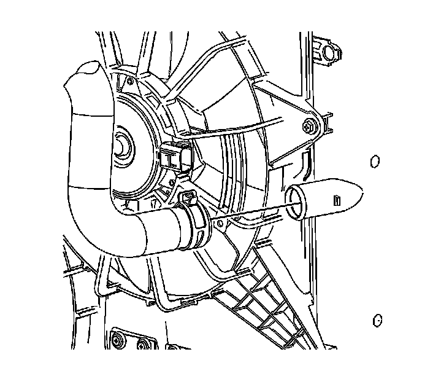

Radiator Inlet Hose Replacement
Radiator Inlet Hose Replacement (LH2 - Gas, 8 Cylinder, 4.6L, SFI, V8, DOHC, HO)
Tools Required
J 38185 Hose Clamp Pliers
Removal Procedure

1. Drain the coolant. Refer to Cooling System Draining and Filling (GE 47716 -Vac N Fill Coolant Refill Tool) (Service and Repair)Cooling System Draining and Filling (Static Fill) (Service and Repair) .
2. Using the J 38185 , disengage the tension on the hose clamp and remove the radiator inlet hose from the throttle body housing.
3. Using the J 38185 , disengage the tension on the hose clamp and remove the radiator inlet hose from the radiator.
4. Remove the radiator inlet hose from the vehicle.
Installation Procedure
1. Install the inlet radiator hose into the vehicle.
Important: Lubricate the inside diameters of the hoses with clean coolant prior to installation.
2. Using the J 38185 , disengage the tension on the hose clamp and Install the radiator inlet hose to the radiator.
3. Using the J 38185 slide the clamp into the original position.
4. Using the J 38185 , disengage the tension on the hose clamp and install the radiator inlet hose to the throttle body housing.
5. Using the J 38185 slide the clamp into the original position.
6. Fill the cooling system. Refer to Cooling System Draining and Filling (GE 47716 -Vac N Fill Coolant Refill Tool) (Service and Repair)Cooling System Draining and Filling (Static Fill) (Service and Repair) .